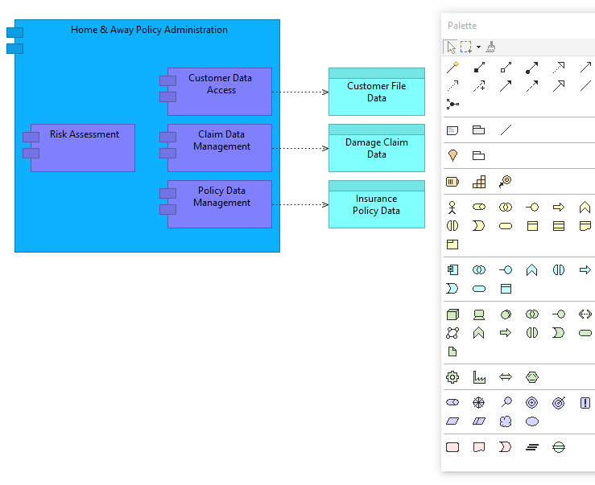

On Windows and Linux, a View can be displayed and edited in Full Screen mode (this is not available on the macOS version of Archi since macOS has its own full screen support). This can be useful to maximise the View for presentation purposes. To do so select a View and press the F11 key, or choose the "Full Screen" menu item from the main "View" menu. The View will be maximised:
A View in Full Screen mode
The Floating Palette window can be closed with the Escape key or the window's close button. Right-clicking on the View in Full Screen mode invokes a context menu where the Palette may be shown if it is not currently visible.